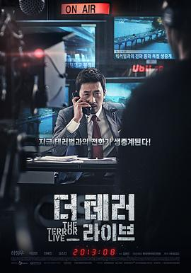

恐怖直播 / 더 테러 라이브
又名：死亡“动”新闻(港) / 恐怖攻击直播(台) / The Terror Live / 90 Minutes of Terror
第一次看的韩国悬疑片就是这个，非常好看，结局主播亮了。
作品信息
| 导演 | 金秉祐 |
| 编剧 | 金秉祐 |
| 主演 | 河正宇 / 李璟荣 / 全慧珍 / 李大卫 / 金弘波 / 崔正贤 / 崔大勋 / 姜信哲 / 韩成天 / 孙成灿 / 金素辰 / 金大明 / 金海仁 |
| 类型 | 剧情 / 悬疑 / 犯罪 |
| 制片国家/地区 | 韩国 |
| 语言 | 韩语 |
| 上映日期 | 2013-07-31(韩国) |
| 片长 | 97分钟 |
| IMDb | tt2990738 |
说过什么
2014-01-10 23:03:31
看过 · 时间来自广播，短评来自标记页
第一次看的韩国悬疑片就是这个，非常好看，结局主播亮了。
最后一次看到是 2026-08-01T11:07:27+10:00 · 豆瓣原页